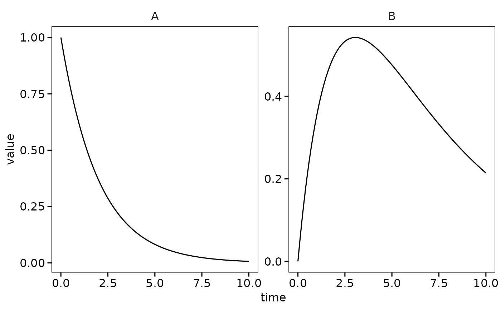

Turns an odemodel() into a prediction function that
integrates the states and, with deriv = TRUE, their sensitivities.
Usage
Xs(odemodel, ...)
# S3 method for class 'deSolve'
Xs(
odemodel,
forcings = NULL,
events = NULL,
names = NULL,
condition = NULL,
options = list(),
optionsSens = list(),
fcontrol = NULL,
...
)
# S3 method for class 'cppDE'
Xs(
odemodel,
forcings = NULL,
events = NULL,
names = NULL,
condition = NULL,
options = list(),
optionsSens = list(),
optionsReverse = NULL,
...
)Arguments
- odemodel
An
odemodel(). The backend of the model decides which method runs.- ...
Not used; an argument not named here is an error.
- forcings
data.framewith columnsname(character or factor),timeandvalue, one row per data point of a forcing declared inodemodel(forcings = ). See section Forcings.- events
deSolvebackend only. An eventlist, or adata.frameas.eventlist()accepts. Applied to the states only, the sensitivities are not corrected, so define events inodemodel()unless the prediction is used for simulation alone. The other backends take events only fromodemodel().- names
Character vector, the states and forcings to return.
NULLreturns all states followed by the forcings. On thecppDEandSundialsbackends a name that is no state or forcing is dropped, and only an empty result is an error; on thedeSolvebackend such a name is an error.- condition
NULLfor a prediction valid in every condition, or the name of the condition it belongs to.- options
Named list of solver options for every solve. See section Solver options.
- optionsSens
Named list of solver options for the solves with sensitivities, overriding the entries of
optionsit names. See section Solver options.- fcontrol
deSolvebackend only. List with the interpolation settings of the forcings,method,rule,fandtiesas instats::approxfun(), passed todeSolve::ode()as argumentfcontrol.- optionsReverse
Named list controlling the backward pass of
sweep = "reverse". Needsbackend = "cppDE"and a model built withderivMode = "reverse".NULL, the default, sweeps the step grid of the value pass. An unknown entry is an error. Entries:refine:TRUEchecks each step of the sweep against the tolerances of the solve and sweeps a failing step again in substeps, seecppDE::adjointControl(). DefaultFALSE. The value and thechi2attribute of the reverse objective ofnormL2()then include the first-order change from the computed trajectory to the one the sweep differentiates, so value and gradient belong to one function, which need not be closer to the exact value; a call withderiv = FALSEsweeps as well. The change is the attributecorrectionof the result. Forward values, the sweeps ofem()andmsem()(forward over reverse) and multiple shooting run without refine;em()refuses a prediction with it.gradtol: underrefine, the absolute tolerance on each step's share of the gradient. DefaultNULL, no check on the gradient.
Value
A prdfn, called as x(times, pars, ...), see section Calling
a dMod function. It returns a prdlist with one prdframe per
condition: the states over times, with the sensitivities in
attr(, "deriv"), [time, state, parameter], when deriv = TRUE, and
the second-order sensitivities in attr(, "deriv2"),
[time, state, parameter, parameter], when deriv2 = TRUE (cppDE
backend, model built with deriv2 = TRUE).
Solver options
On the cppDE and Sundials backends the lists take the entries below and
pass them to cppDE::solveODE(). An entry not given keeps the default; an
unknown entry is an error, also when set later with controls().
atol,rtol: absolute and relative error tolerance, default1e-6.maxsteps: largest number of steps of one solve, default1e6.maxattempts: consecutive rejected steps before the solve fails, default50.hini: first step size, default0, which estimates it.roottol: tolerance of root-triggered events and ofrootfunc = "equilibrate", default1e-6.maxroot: number of times a root event may fire, default1.onFailure:"stop"(default),"warn"or"silent"on a failed solve. With"warn"and"silent"the result ends at the time reached, so an objective sees fewer data points rather than a failure.traceFile: CSV file the per-step trace is written to, defaultNULL; needsodemodel(..., stepTrace = TRUE).maxOrder: upper bound on the order of the multistep methods, 1 to 5 for"bdf"and 1 to 12 for"adams"; defaultNULL, the method's own.stald: stability limit detection for"bdf", defaultFALSE; seecppDE::solveODE().sensErrCon:optionsSensonly.FALSEtakes the sensitivities out of the error test, which is cheaper and gives less accurate sensitivities; defaultTRUE.
options applies to every solve. The solves with sensitivities, those of
deriv = TRUE and of sweep = "reverse" with deriv2 = TRUE, take
optionsSens merged over options. A fit with the default forward sweep
therefore runs under optionsSens, and the value and backward pass of
sweep = "reverse" under options alone. The integration method is fixed
when the model is built, odemodel(..., method = ).
On the deSolve backend the entries of both lists are arguments of
deSolve::ode(), among them method, atol, rtol, maxsteps and
hini, merged the same way. method defaults to "lsoda" for the solves
without sensitivities and to "lsodes" for those with, unless options or
optionsSens names it.
Forcings
On the cppDE and Sundials backends each forcing is the monotone cubic
Hermite interpolant (PCHIP) of the forcing data points, see
cppDE::forcingValues(). Outside the points it holds the value of the
first and the last one; a single point gives a constant. The integrator
does not stop at the points, so a jump is best given by an event or by
two close points.
On the deSolve backend the forcings are interpolated linearly and held
constant outside their data, unless fcontrol says otherwise.
The forcings are returned after the states, without derivatives, so
observables of Y() can contain them. Different forcings per condition
come from one Xs() per condition, joined by +.
Controls
forcings, names and the solver options are kept, as given, in the
controls of the returned function and read at every solve, so controls()
can change them later; on the deSolve backend events and fcontrol as
well. The controls are named after the arguments, options, optionsSens
and optionsReverse. A replaced list is merged over the defaults as described
in section Solver options, not over the list it replaces, so an entry it
leaves out returns to the default.
Calling a dMod function
The leading arguments depend on the class and are matched by position or by name:
prediction function:
x(times, pars, ...), returning a prdlist;observation function:
g(out, pars, ...)with a prdlistout, returning a prdlist;parameter transformation:
p(pars, ...), returning a list with one parvec per condition;objective function:
obj(pars, ...), returning an objlist.
pars is a named numeric vector. If it has a deriv attribute, as the
output of a parameter transformation does, the derivatives are taken with
respect to the parameters behind it. A composition is called according to
the resulting class:
g * x * p is a prediction function, (g * x * p)(times, pars).
The other arguments are named:
fixed: named numeric vector of parameters that enter the evaluation without derivatives. DefaultNULL.deriv:TRUE(default) returns first derivatives with respect topars.deriv2:TRUEreturns second derivatives as well. DefaultFALSE. Every function of the chain has to be built for them, see the argumentsderiv2andderivModeofodemodel(),Y()andP().hessian: objective functions only, see the table below. DefaultNULL.sweep: objective functions only."forward"(default) propagates the sensitivities through the chain;"reverse"computes the gradient in one backward pass, whose cost does not grow with the number of parameters."reverse"needs every function of the chain built withderivMode = "reverse", and with"forward-reverse"forderiv2 = TRUE.conditions: character vector, the conditions to evaluate. Default all conditions of the function.env: environment for intermediate results. DefaultNULL, a new one. An objective function stores the prediction there aspredictionand returns the environment as attributeenv.cores: number of threads for the ODE solves and the residual kernel. DefaultgetOption("dMod2.cores", 1L).
Prediction, observation and parameter functions accept hessian and
sweep and ignore them. With deriv = TRUE an objective function returns
this Hessian:
sweep | hessian | deriv2 = FALSE | deriv2 = TRUE |
"forward" | NULL, TRUE | Gauss-Newton | exact |
"forward" | FALSE | none | none, with a warning |
"reverse" | NULL | none | exact |
"reverse" | TRUE | none, with a warning | exact |
"reverse" | FALSE | none | none, with a warning |
hessian = "sparse" returns the Gauss-Newton Hessian of the forward sweep
as a sparse Matrix, assembled from the blocks of the conditions; trust()
factorizes it where the argument sparse takes the sparse path, and vcov()
solves it for the columns of which.
With deriv = FALSE it returns the value alone.
See also
Xf() for predictions without sensitivities, controls(),
cppDE::solveODE(); the guide chapters
Setting up models and
Sensitivities, the methods
article Sensitivities and Hessians
and the cppDE article Forward sensitivities.
Examples
# \donttest{
f <- eqnvec(A = "-k1*A", B = "k1*A - k2*B")
model <- odemodel(f, modelname = "Xs_AB", outdir = tempdir())
#> using C++ compiler: g++ [-O2 -DNDEBUG -w -fPIC -fopenmp]
#> using C++ compiler: g++ [-O2 -DNDEBUG -w -fPIC -fopenmp]
## Tighter tolerances for the solves with sensitivities, as used in a fit
x <- Xs(model, optionsSens = list(atol = 1e-8, rtol = 1e-8))
times <- seq(0, 10, 0.1)
pars <- c(A = 1, B = 0, k1 = 0.5, k2 = 0.2)
pred <- x(times, pars)
plot(pred)

dim(attr(pred[[1]], "deriv"))
#> [1] 101 2 4
## Change the options of the existing prediction function
controls(x, NULL, "options") <- list(atol = 1e-10, rtol = 1e-10)
head(x(times, pars, deriv = FALSE)[[1]])
#> time A B
#> [1,] 0.0 1.0000000 0.00000000
#> [2,] 0.1 0.9512294 0.04828208
#> [3,] 0.2 0.9048374 0.09325337
#> [4,] 0.3 0.8607080 0.13509426
#> [5,] 0.4 0.8187308 0.17397599
#> [6,] 0.5 0.7788008 0.21006106
# }